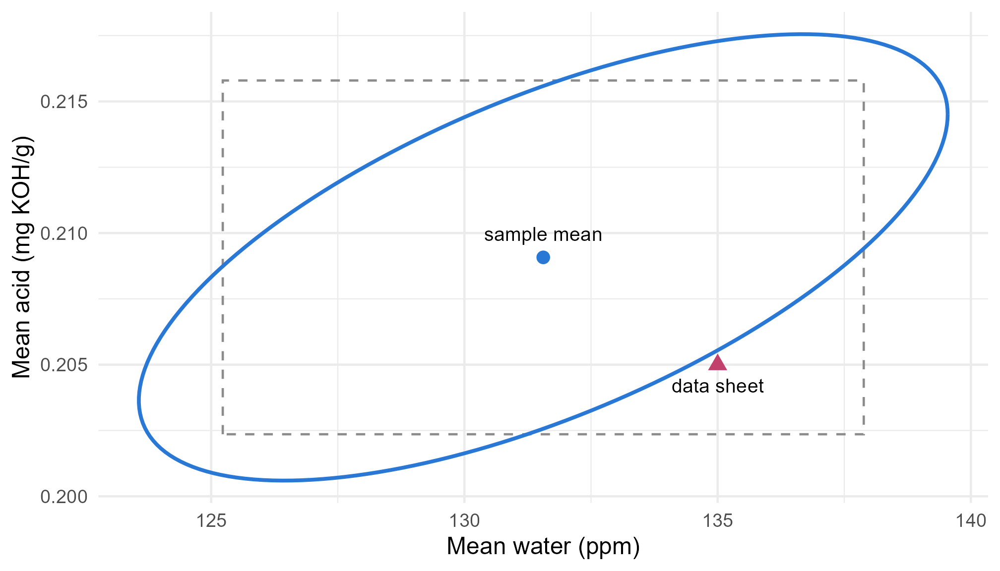

Module 3 · Lesson 4 of 13 Week 50 of 160 About 5–7 hours
Inference for a mean vector
Testing several means at once with Hotelling’s T², and intervals you can trust together
Test a mean vector against target values with Hotelling’s T² and its F distribution, see why four one-at-a-time t-tests can miss what one joint test finds, draw confidence regions, build simultaneous T² and Bonferroni intervals, and use the large-sample chi-square version.
Our product’s data sheet, the document that customers design their processes around, lists typical values for the four properties: 99.2% purity, 135 ppm of water, a color of 15 APHA, and an acid value of 0.205 mg KOH/g. Is the plant still making the product the data sheet describes? That’s a question about four means at once. You could run four t-tests, but this lesson shows two problems with that: it asks four questions instead of one, and, more surprisingly, it can miss a difference that’s really there. The fix is a test named after Harold Hotelling, who introduced it in 1931.
Four t-tests walk into a bar. None of them notices anything odd. Hotelling walks in and says: “Hang on, what’s wrong with this picture?” Let’s see what he spotted.
In this lesson you’ll:
- test a mean vector against target values with Hotelling’s T^2
- see how a joint test can detect what separate t-tests can’t
- draw a confidence region for a mean vector
- build simultaneous T^2 and Bonferroni intervals, and compare them with ordinary ones
- use the large-sample chi-square version of the test
FS73, the batch with the acid-wash residue (Lessons 2 and 3), is left out from here on: it isn’t an example of normal production.
One question instead of four
The question is a single null hypothesis about the whole mean vector:
H_0: \boldsymbol\mu = \boldsymbol\mu_0 = \begin{pmatrix} 99.2 \\ 135 \\ 15 \\ 0.205 \end{pmatrix}.
In one dimension, the t statistic is t = (\bar{x} - \mu_0)/(s/\sqrt{n}), and its square is t^2 = n(\bar{x} - \mu_0)(s^2)^{-1}(\bar{x} - \mu_0). Replace each piece by its matrix version, and you get Hotelling’s T^2:
T^2 = n\,(\bar{\mathbf{x}} - \boldsymbol\mu_0)^\top S^{-1} (\bar{\mathbf{x}} - \boldsymbol\mu_0) .
It’s n times the squared Mahalanobis distance of the sample mean from the target. If H_0 is true and the data are multivariate normal, a rescaled T^2 follows an F distribution:
\frac{n - p}{p\,(n - 1)}\, T^2 \sim F_{p,\ n - p} .
With 79 batches and 4 properties, that’s an F distribution with 4 and 75 degrees of freedom.
Your turn. Compute T^2, the F statistic and the p-value.
The denominator degrees of freedom are n - p.
d <- colMeans(Y) - target
T2 <- n * t(d) %*% solve(cov(Y)) %*% d
F_stat <- (n - p) / (p * (n - 1)) * T2
c(T2 = T2, F = F_stat, p = pf(F_stat, p, n - p, lower.tail = FALSE))T^2 = 11.1, F = 2.67 on 4 and 75 degrees of freedom, p = 0.039. At the 5% level, the product isn’t what the data sheet describes.
One at a time says no, together says yes
Now the separate t-tests. Here are the means, the targets and the four p-values:
tibble(property = colnames(Y), mean = colMeans(Y), target = target,
p_value = sapply(1:4, function(j) t.test(Y[, j], mu = target[j])$p.value))
#> # A tibble: 4 × 4
#> property mean target p_value
#> <chr> <dbl> <dbl> <dbl>
#> 1 purity_pct 99.2 99.2 0.404
#> 2 water_ppm 132. 135 0.282
#> 3 color_apha 15.4 15 0.373
#> 4 acid_mgKOH 0.209 0.205 0.231None of the four comes anywhere near significance: the p-values run from 0.23 to 0.40. Each mean, on its own, is consistent with its typical value. Yet the joint test rejects. How?
Look at water and acid together. The product has 3.4 ppm less water than the data sheet says, and 0.004 mg KOH/g more acid. Each difference alone is small. But water and acid are positively correlated (water makes acid), so in this process they tend to move up or down together. A product that’s drier yet more acidic is moving against the grain, in a direction where the sample mean is precise. Here’s the picture: the ellipse is the 95% confidence region for the two means, and the dashed rectangle is made of the two ordinary 95% confidence intervals:
W <- Y[, c("water_ppm", "acid_mgKOH")]
n <- nrow(W)
c2 <- 2 * (n - 1) / (n - 2) * qf(0.95, 2, n - 2)
theta <- seq(0, 2 * pi, length.out = 200)
region <- t(colMeans(W) + sqrt(c2 / n) * t(chol(cov(W))) %*% rbind(cos(theta), sin(theta)))
ci <- sapply(1:2, function(j) t.test(W[, j])$conf.int)
ggplot() +
annotate("rect", xmin = ci[1, 1], xmax = ci[2, 1], ymin = ci[1, 2], ymax = ci[2, 2],
fill = NA, color = "grey55", linetype = "dashed") +
geom_path(aes(x = region[, 1], y = region[, 2]), color = "#2a78d6", linewidth = 0.9) +
geom_point(aes(x = mean(W[, 1]), y = mean(W[, 2])), color = "#2a78d6", size = 2.5) +
geom_point(aes(x = 135, y = 0.205), color = "#C2416C", size = 3, shape = 17) +
annotate("text", x = 135, y = 0.205, label = "data sheet", vjust = 2, size = 3.5) +
annotate("text", x = mean(W[, 1]), y = mean(W[, 2]), label = "sample mean", vjust = -1.2, size = 3.5) +
labs(x = "Mean water (ppm)", y = "Mean acid (mg KOH/g)") +
theme_minimal(base_size = 12)
The data sheet’s values (the triangle) are inside the rectangle, so each t-test lets them through. But they’re outside the tilted ellipse, which follows the correlation between the two means. The rectangle’s corners are full of combinations that the data actually rule out, like “drier and more acidic”, and that’s exactly where the data sheet’s values sit. For these two properties alone, T^2 = 7.3, p = 0.032.
That’s the second reason to test jointly. The first was multiple testing (Lesson 2.6): four tests at 5% each have a much bigger chance of a false alarm than 5%. The joint test fixes that, and it uses the correlations, which can make it more powerful than any of the separate tests.
Your turn. Run the four separate t-tests against the data sheet’s values, and collect their p-values.
Each test uses its own target: target[j].
sapply(1:4, function(j) t.test(Y[, j], mu = target[j])$p.value)0.40, 0.28, 0.37 and 0.23. Four “no difference” verdicts, and one joint “yes, there’s a difference”.
NoteGo deeper: T² is the worst-case t-test
Take any linear combination of the properties, \mathbf{a}^\top\mathbf{x}, and test whether its mean equals \mathbf{a}^\top\boldsymbol\mu_0. Its squared t statistic is
t^2(\mathbf{a}) = \frac{n\,[\mathbf{a}^\top(\bar{\mathbf{x}} - \boldsymbol\mu_0)]^2}{\mathbf{a}^\top S\,\mathbf{a}} .
Hotelling’s T^2 is the largest value that t^2(\mathbf{a}) can take, over every possible \mathbf{a}. (That’s the Cauchy-Schwarz inequality, and the maximum is reached at \mathbf{a} \propto S^{-1}(\bar{\mathbf{x}} - \boldsymbol\mu_0).) So T^2 searches every combination of the properties for the one that differs most from its target, and it reports how big that difference is.
That’s why T^2 can’t follow a t distribution: it’s the maximum of infinitely many correlated t^2s, so it’s naturally larger, and its F distribution allows for the search. And it’s why the confidence region gives simultaneous intervals, in the next section: they’re all consistent with one another, because they all come from the same ellipse.
Confidence regions
The 95% confidence region for \boldsymbol\mu is the set of all mean vectors that the T^2 test wouldn’t reject:
\left\{ \boldsymbol\mu : n(\bar{\mathbf{x}} - \boldsymbol\mu)^\top S^{-1}(\bar{\mathbf{x}} - \boldsymbol\mu) \le c^2 \right\}, \qquad c^2 = \frac{p(n - 1)}{n - p}\,F_{p,\,n-p}(0.95) .
It’s an ellipsoid centered at \bar{\mathbf{x}}, with axes along the eigenvectors of S, and half-lengths \sqrt{\lambda_j}\,c/\sqrt{n}. With two variables, you can draw it, as above. With four, you can’t, but you can still check whether a given vector is inside it: compute its T^2, and compare it with c^2.
Your turn. For water and acid alone, is the data sheet’s pair of values inside the 95% confidence region? Compute its T^2 and the critical value c^2, with p = 2.
With p = 2, the denominator degrees of freedom are n - 2.
W <- Y[, c("water_ppm", "acid_mgKOH")]
d <- colMeans(W) - c(135, 0.205)
T2 <- n * t(d) %*% solve(cov(W)) %*% d
c2 <- 2 * (n - 1) / (n - 2) * qf(0.95, 2, n - 2)
c(T2 = T2, critical = c2)T^2 = 7.31, above the critical value of 6.31: the data sheet’s water and acid lie outside the confidence ellipse, as the plot showed.
Simultaneous intervals
The joint test says something differs. To report what, you want an interval for each mean, but four ordinary 95% intervals don’t have a 95% chance of being right together. Two ways to fix that:
- Simultaneous T^2 intervals: \bar{x}_j \pm c\, s_j/\sqrt{n}, with c the square root of the critical value above. These are the shadows of the confidence ellipsoid on each axis. Their great strength is that the same c works for every linear combination you might look at, \mathbf{a}^\top\bar{\mathbf{x}} \pm c\sqrt{\mathbf{a}^\top S\mathbf{a}/n}, even ones you think of after seeing the data, and all of them are right together 95% of the time.
- Bonferroni intervals: \bar{x}_j \pm t_{n-1}\!\left(\tfrac{\alpha}{2p}\right) s_j/\sqrt{n}. Each interval gets an error rate of \alpha/p, so together they’re wrong at most \alpha of the time (Lesson 2.13). For a few planned intervals, they’re narrower than the T^2 ones.
They differ only in the multiplier. For p = 4 and n = 79:
| Intervals | Multiplier | Covers all four together |
|---|---|---|
| ordinary t, one at a time | 1.99 | no |
| Bonferroni | 2.56 | yes, at least 95% |
| simultaneous T^2 | 3.22 | yes, 95%, and any other combination too |
Here, every interval contains its typical value, even the narrowest. That isn’t a contradiction of the joint test. The difference the test found isn’t in any single property: it’s in a combination, acid relative to water, and only an interval for that combination would show it. The first challenge finds it.
Your turn. Compute the three multipliers.
The F quantile has p and n - p degrees of freedom.
c(t = qt(0.975, n - 1),
bonferroni = qt(1 - 0.05 / (2 * p), n - 1),
T2 = sqrt(p * (n - 1) / (n - p) * qf(0.95, p, n - p)))1.99, 2.56 and 3.22. The price of covering every possible combination is a wider interval for each one.
Your turn. Compute the simultaneous T^2 interval for the mean acid value.
The standard error of a mean is s/\sqrt{n}.
c_mult <- sqrt(p * (n - 1) / (n - p) * qf(0.95, p, n - p))
acid <- Y[, "acid_mgKOH"]
mean(acid) + c(-1, 1) * c_mult * sd(acid) / sqrt(n)From 0.198 to 0.220 mg KOH/g: it contains the data sheet’s 0.205, comfortably.
Large samples: the chi-square version
When n is large, S is a very good estimate of \Sigma, and T^2 behaves like the squared Mahalanobis distance with a known covariance matrix. By last lesson’s property 4, that’s chi-square:
T^2 \approx \chi^2_p \quad \text{for large } n - p .
That has two advantages. It doesn’t need multivariate normality, only the central limit theorem, so it works for skewed data when n is large. And chi-square quantiles are easy to remember: the 95% point for p = 4 is 9.49, against 10.37 for the exact T^2 critical value here. With n = 79, the two still differ noticeably. The chi-square version is a little too liberal, and the F version is the one to report.
Your turn. Compute the large-sample chi-square p-value for T^2 = 11.11.
The degrees of freedom are the number of variables, p.
d <- colMeans(Y) - target
T2 <- n * t(d) %*% solve(cov(Y)) %*% d
pchisq(T2, df = p, lower.tail = FALSE)p = 0.025, against 0.039 from the F distribution. The approximation ignores the uncertainty in S, so it’s a little too confident.
Challenge round
Challenge 1 · The combination that differs. The Go deeper box says that T^2 is the squared t statistic of the best combination, \mathbf{a} = S^{-1}(\bar{\mathbf{x}} - \boldsymbol\mu_0). Compute that combination for every batch, test its mean against \mathbf{a}^\top\boldsymbol\mu_0 with a t-test, and square the t statistic.
The combination’s target is \mathbf{a}^\top\boldsymbol\mu_0: sum(a * target).
a <- solve(cov(Y)) %*% (colMeans(Y) - target)
z <- Y %*% a
t_best <- t.test(z, mu = sum(a * target))$statistic
unname(t_best^2)11.11, exactly T^2. Scale each weight by its variable’s standard deviation, a * sqrt(diag(cov(Y))), to compare them: the biggest are +1.0 for the acid and -0.8 for the water, with smaller weights for the purity (+0.3) and the color (-0.2). The difference is “acid relative to water”: for its water content, our product is more acidic than the data sheet suggests. Not by much, but consistently.
Challenge 2 · Units don’t matter. Express the water in percent instead of ppm, and the acid in mg KOH per kg instead of per g, convert the targets the same way, and recompute T^2.
The acid was multiplied by 1000, so its target is too.
Y2 <- Y
Y2[, "water_ppm"] <- Y2[, "water_ppm"] / 10000
Y2[, "acid_mgKOH"] <- Y2[, "acid_mgKOH"] * 1000
target2 <- target * c(1, 1 / 10000, 1, 1000)
d2 <- colMeans(Y2) - target2
n * t(d2) %*% solve(cov(Y2)) %*% d211.11 again. T^2 doesn’t care about units, because S^{-1} undoes any rescaling. A test based on plain Euclidean distances would give a different answer in every set of units, which is no way to make a decision.
Quick quiz
1. What does Hotelling’s T^2 test?
H_0: \boldsymbol\mu = \boldsymbol\mu_0, a single hypothesis about all the means together.
2. Four t-tests are all non-significant, but T^2 rejects. How can that be?
T^2 is the largest t^2 over all combinations. Here, the product is drier yet more acidic, a direction in which the mean is estimated precisely.
3. What’s the distribution of \frac{n-p}{p(n-1)}T^2 under H_0, for multivariate normal data?
And for large n, T^2 itself is approximately \chi^2_p.
4. What shape is a confidence region for a mean vector of two variables?
It’s the set of mean vectors with T^2 below the critical value. The rectangle includes combinations that the ellipse rules out.
5. Why are simultaneous T^2 intervals wider than Bonferroni intervals for the four means?
For a few planned intervals, Bonferroni is narrower. For exploring combinations after seeing the data, the T^2 intervals keep their promise.
6. You change the water’s units from ppm to percent. What happens to T^2?
S^{-1} undoes any rescaling of the variables, so T^2 (like the Mahalanobis distance) is unit-free.
Wrap-up
You can now test several means at once, and say where they differ! Here’s what you’ve learned:
- Hotelling’s T^2 = n(\bar{\mathbf{x}} - \boldsymbol\mu_0)^\top S^{-1}(\bar{\mathbf{x}} - \boldsymbol\mu_0) tests a whole mean vector at once, with \frac{n-p}{p(n-1)}T^2 \sim F_{p,\,n-p}.
- Joint beats separate: one test instead of four, and it uses the correlations. The product matched every typical value on its own, yet jointly it didn’t (p = 0.039): it’s more acidic for its water content than the data sheet suggests.
- Confidence regions are ellipsoids. Check whether a vector is inside by comparing its T^2 with c^2 = \frac{p(n-1)}{n-p}F_{p,\,n-p}(0.95).
- Simultaneous intervals: T^2 intervals (multiplier c) cover every combination together, and Bonferroni intervals (t_{n-1}(\alpha/2p)) are narrower for a few planned ones.
- T^2 is the worst-case t^2, reached at \mathbf{a} \propto S^{-1}(\bar{\mathbf{x}} - \boldsymbol\mu_0), and it doesn’t depend on the units.
- Large samples: T^2 \approx \chi^2_p, without needing normality, but the F version is more accurate for moderate n.
TipPractice in RStudio (optional, about an hour)
Download batch_quality.csv into your project’s data-raw/ folder.
- Packages that do it for you. Install the DescTools package and run
DescTools::HotellingsT2Test(Y, mu = target). Check that it matches your T^2 test. - With and without FS73. Rerun the test with FS73 included. How much does one batch change the result, and in which direction? Why?
- Coverage by simulation. Simulate 2,000 samples of 79 batches from a multivariate normal with mean
targetand covariancecov(Y), and count how often the T^2 test rejects at 5%. Then count how often at least one of the four t-tests rejects. Which one keeps its promise of 5%? - An ellipse for purity and color. Draw the 95% confidence region for the mean purity and color, which are strongly negatively correlated, and add the data sheet’s values. Which way does the ellipse tilt?
NoteKey words from this lesson
- Hotelling’s T^2
- The multivariate version of the squared t statistic, n(\bar{\mathbf{x}} - \boldsymbol\mu_0)^\top S^{-1}(\bar{\mathbf{x}} - \boldsymbol\mu_0), used to test a mean vector.
- Confidence region
- The set of all mean vectors that a test wouldn’t reject: an ellipsoid for T^2.
- Simultaneous confidence intervals
- A set of intervals that are all correct together with a stated probability, such as 95%.
- T^2 intervals
- Simultaneous intervals with the multiplier c = \sqrt{\frac{p(n-1)}{n-p}F_{p,\,n-p}(0.95)}, valid for every linear combination of the means.
- Bonferroni intervals
- Simultaneous intervals for a planned set of m combinations, each built at the level 1 - \alpha/m.
- Affine invariance
- A statistic’s property of not changing when the variables are rescaled or recombined linearly, as T^2 doesn’t.
NoteWant to read more?
- Penn State STAT 505, Lesson 7: Inferences Regarding Multivariate Population Mean, sections 7.1.1 to 7.1.5 and 7.2.4. Hotelling’s T^2, confidence ellipses, and simultaneous and Bonferroni intervals, with worked examples.
- Johnson and Wichern, Applied Multivariate Statistical Analysis, chapter 5. The full treatment, including the proofs and the large-sample results.
- Harold Hotelling, “The generalization of Student’s ratio”, Annals of Mathematical Statistics 2 (1931). The paper where it all started.